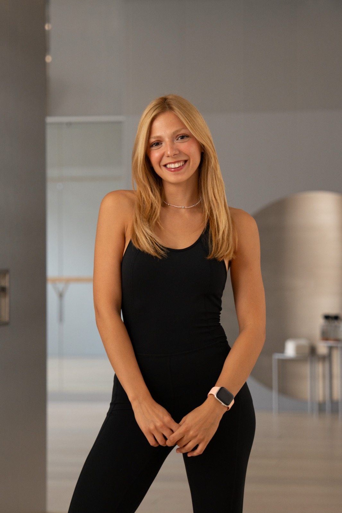

Some people find their path. I was born on mine.

I was a competitive gymnast before I was anything else. Sport wasn't something I did — it was the language I thought in. By the time I was a teenager, I already knew: I would spend my life in this world. Nothing else made sense.
I graduated first in my class from sports high school. Then first again when I entered the Faculty of Sports Sciences at Kocaeli University. Throughout my studies, I competed at national level in futsal — our team won the Turkish university championship.
I also coached gymnastics, swimming, and badminton, taught Pilates in dozens of studios across Istanbul, and ran my own training business before I ever left Turkey. I didn't just study movement. I lived it.
My Master's in Movement and Training Science wasn't just a degree — it was where the athlete in me met the scientist. I wrote my thesis on women in menopause and the effects of training on hormonal and physical adaptation.
What I understood by the end was this: you cannot fully separate movement from the nervous system. The body doesn't just respond to exercise — it responds to signals. And those signals are neurological.
That realisation brought me to Charité.
I studied male physiology and strength training. I worked with children, older adults, professional athletes, and everyone in between. The more I learned, the clearer the picture became: the nervous system is the foundation of everything.
This understanding isn't a differentiator I market. It's the actual basis of how I program, coach, and think about every client's body.
I'm currently a Guest Researcher in Professor Andrea Kühn's neurology lab at Charité Universitätsmedizin Berlin — one of the world's leading medical universities and a global centre for neuroscience research.
Our lab works with Parkinson's disease patients. My role sits at the intersection of movement science and clinical neurology: I conduct EEG-based brain measurements, analyse movement patterns, and contribute to the development of new methods and technologies to improve patients' quality of life.
In plain terms: I study how the brain controls movement — and what happens when that control is disrupted.
"This isn't a credential I wear. It's a perspective I train with."
There's a saying: a great chef must first learn to wash the dishes. I believe the same is true in movement. I've been on every side of sport — athlete, competitor, coach, teacher, researcher.
I've worked with children and with 70-year-olds. With elite footballers and with women navigating menopause. With complete beginners and with people who've been training for decades and still can't figure out why something hurts.
That breadth is not accidental. It's what makes the difference between a trainer who gives you exercises and a movement scientist who actually understands your body.
In 2023, I moved to Berlin to pursue an MBA — and to build something bigger than what I had in Istanbul. That was not a small decision. In Turkey, I had a reputation. I had clients who had been with me for years. I left all of it.
Berlin forced me to start over — with nothing but the expertise I had spent a decade building. No network. No shortcuts. Just work.
I'm grateful for that. The city has made me better. More rigorous. More focused. And it connected me to a world of research and science that I couldn't have accessed anywhere else. Train With Buse is what came out of all of it.
Whether you're in Berlin or anywhere in the world, there's a way to work with me.